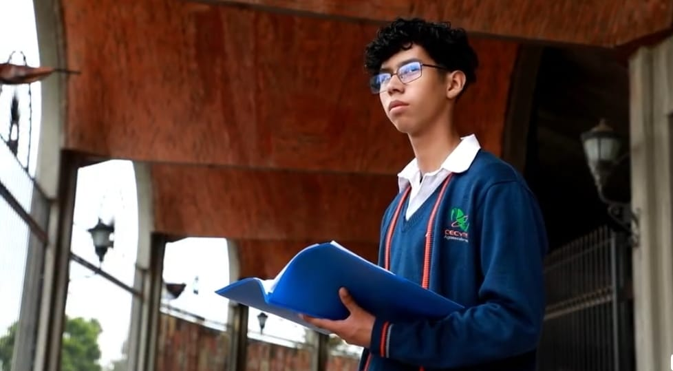
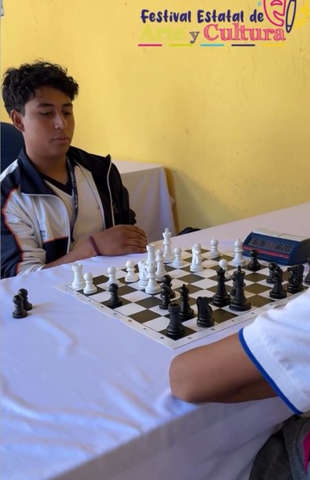
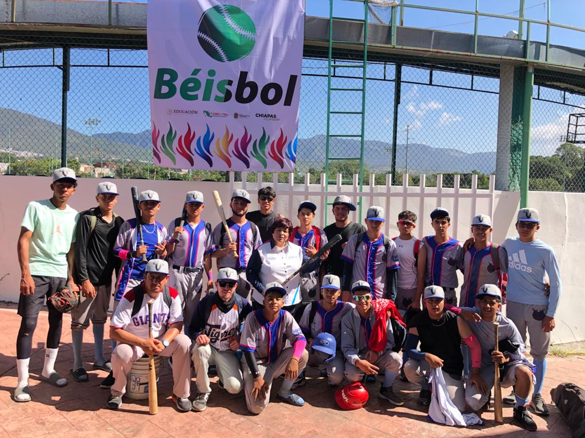

BIENVENIDO A LOS CLUBS
El Cecytea cuenta con una gran variedad de clubes deportivos y culturales dentro de los cuales podrás desarrollar muchas habilidades distintas y descubrir nuevos intereses.
BANDA DE GUERRA
Este club es una institución emblemática que promueve la disciplina, el trabajo en equipo y el amor por la música marcial. Participamos en ceremonias escolares, desfiles y competencias, representando con orgullo a nuestra preparatoria. Los miembros reciben instrucción en la ejecución de instrumentos de percusión y viento, así como en técnicas de marcha y coordinación.¡Únete a la Banda de Guerra y sé parte de una tradición de excelencia y honor!

ESCOLTA
La Escolta es un grupo de estudiantes dedicados a la representación y el honor de nuestra institución en ceremonias cívicas y escolares. Nos enfocamos en inculcar valores como la disciplina, el respeto y el trabajo en equipo a través de la práctica rigurosa y la coordinación precisa. Formar parte de la escolta es un privilegio y una responsabilidad que fortalece el espíritu de liderazgo y patriotismo. ¡Únete a nosotros y lleva con orgullo los símbolos de nuestra preparatoria!

DANZA
El Club de Danza es el espacio perfecto para los estudiantes apasionados por la expresión a través del movimiento. Ofrecemos clases en una variedad de estilos de danza destacando el folclore. Nuestros miembros participan en presentaciones escolares, competencias y festivales, mostrando su talento y dedicación. Con el apoyo de instructores profesionales, cada estudiante puede desarrollar sus habilidades técnicas y artísticas, mientras fomenta el trabajo en equipo y la creatividad. ¡Únete a nosotros y descubre la alegría de la danza en un entorno dinámico y acogedor!

FOTOGRAFÍA
El Club de Fotografía es el lugar perfecto para los estudiantes interesados en capturar el mundo a través de su lente. Ofrecemos talleres, salidas fotográficas y exposiciones para que los miembros puedan desarrollar sus habilidades técnicas y artísticas. Con la orientación de fotógrafos experimentados, fomentamos la creatividad y la expresión personal en cada toma. ¡Únete a nosotros y explora tu pasión por la fotografía en un entorno inspirador y colaborativo!

POESÍA
El Club de Poesía es un espacio dedicado a la expresión literaria y la creatividad. Invitamos a todos los estudiantes interesados en la poesía a unirse a nuestras sesiones de escritura, talleres y recitales. En el club, fomentamos el desarrollo de habilidades literarias y el aprecio por la belleza de las palabras, explorando diversos estilos y autores. ¡Únete a nosotros y encuentra tu voz poética en una comunidad de escritores entusiastas!
AJEDREZ
El Club de Ajedrez es el espacio ideal para los estudiantes apasionados por este fascinante juego de estrategia. Nos enfocamos en mejorar las habilidades tácticas y estratégicas de nuestros miembros, mientras promovemos el pensamiento crítico y la concentración. Con la guía de entrenadores expertos, cada estudiante puede desarrollar su potencial en un ambiente amigable y de apoyo. ¡Únete a nosotros y descubre el emocionante mundo del ajedrez!
FUTBOL
El Club de Fútbol es un equipo comprometido con la excelencia deportiva y el desarrollo integral de sus jugadores. Ofrecemos entrenamientos regulares, partidos amistosos y participación en torneos intercolegiales. Nuestro enfoque se centra en mejorar las habilidades técnicas, tácticas y físicas de los estudiantes, al tiempo que promovemos valores como el trabajo en equipo, la disciplina y el espíritu deportivo. ¡Únete a nosotros y sé parte de un equipo apasionado por el fútbol!

BEISBOL
El Club de Béisbol es el lugar ideal para los estudiantes apasionados por el béisbol. Ofrecemos entrenamientos regulares, partidos amistosos y competiciones intercolegiales. Nuestro objetivo es desarrollar las habilidades técnicas, tácticas y físicas de cada jugador, mientras fomentamos valores como el trabajo en equipo, la disciplina y el respeto. ¡Únete a nosotros y vive la emoción del béisbol en un entorno dedicado y entusiasta!
BÁSQUETBOL
El Club Deportivo de Básquet es una organización dedicada a fomentar el amor por el baloncesto entre los estudiantes. Ofrecemos entrenamientos regulares, competiciones internas y participación en torneos intercolegiales. Nuestro enfoque es desarrollar habilidades técnicas, promover el trabajo en equipo y cultivar valores como la disciplina y la perseverancia. ¡Únete a nosotros y sé parte de una comunidad apasionada por el básquet!